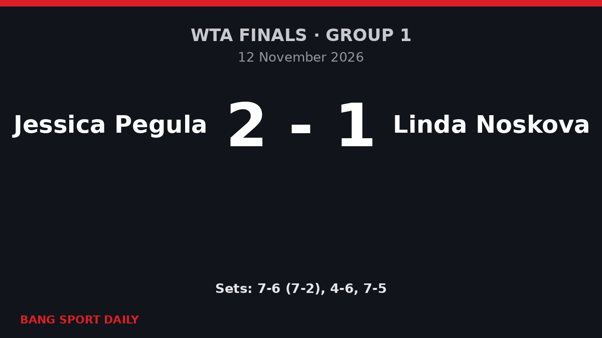

Pegula Saves Match Point to Beat Noskova and Reach WTA Finals Last Four
American veteran overcomes a match point in a fluctuating contest to knock out Coco Gauff and set up a semi-final clash with Mirra Andreeva.

What happened
Jessica Pegula secured her place in the WTA Finals semi-finals on Thursday by saving a match point to defeat Wimbledon champion Linda Noskova 7-6 (7-2), 4-6, 7-5. Pegula entered the court knowing only a victory would keep her tournament alive following Coco Gauff's earlier win over Marta Kostyuk. The American displayed strong mental resilience across a two-hour and 45-minute battle in the California desert, ultimately eliminating Gauff on set differentials after three players finished the round-robin stage with 2-1 records.
Why it is being talked about

The group stage concluded with Noskova, Pegula, and Gauff all tied at 2-1, requiring set counts to determine advancement. Noskova topped the group with a 5-2 set record, while Pegula advanced in second place at 5-3, leaving Gauff's 4-3 record short of qualification. The dramatic finish also sets up an anticipated semi-final meeting between Pegula and French Open champion Mirra Andreeva.
Key facts and numbers
Pegula struck a career-high 16 aces during the match—the most she has ever produced in a WTA Tour fixture—while overcoming Noskova's aggressive third-set break and match point at 5-4. Conversely, Noskova struggled with her delivery, committing 15 double faults against nine aces. The tournament is being held at Indian Wells after being relocated from Riyadh. Earlier in the day, world number four Gauff overcame a lower back injury and a 5-1 deficit in the second set to defeat alternate Marta Kostyuk 6-4, 7-5. Kostyuk finished her campaign 0-3 after replacing the withdrawn Elena Rybakina while managing a wrist injury.
What happens next

Noskova advances to face either Elina Svitolina or Aryna Sabalenka in Saturday's semi-finals. Pegula moves on to face Mirra Andreeva.